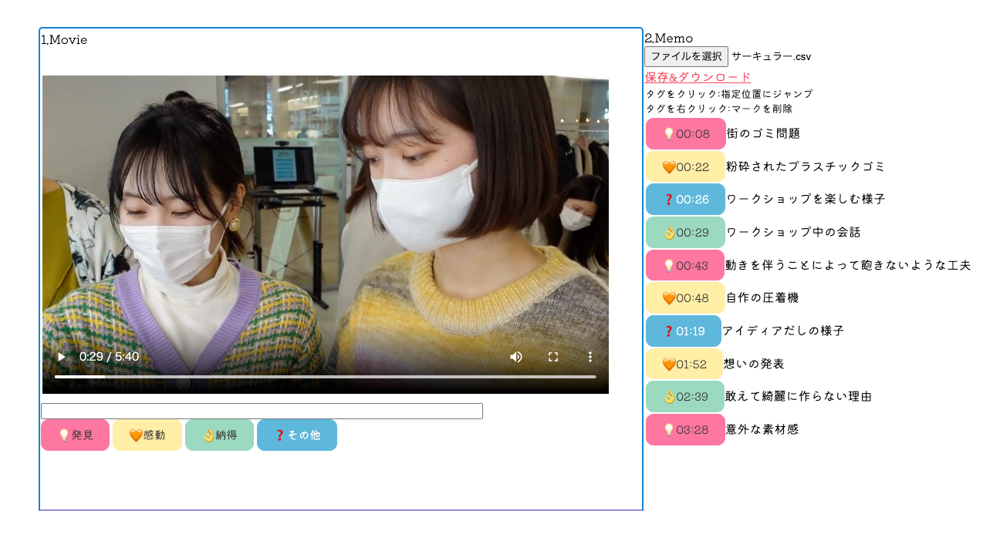
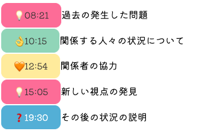
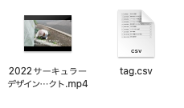
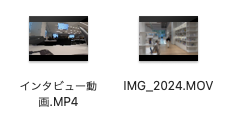
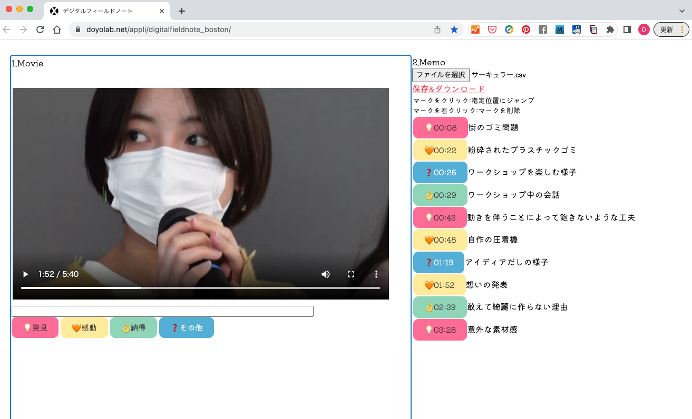

デジタルフィールドノート ChiangMai
デジタルフィールドノートは
動画資料にタグをつけて、
・グループによるインサイト（洞察）の質を向上させます。
・資料として、振り返りを容易にします。

特徴
- 直感的なタグづけ
直感的なタグ使って、動画を再生しながら簡単にタグづけができます。
- タグづけしたシーンに簡単アクセス
タグをクリックすることで、指定位置を簡単に再生できます。

- 再現性
タグファイルと動画ファイルをセットで保存しておくことで、記録を簡単に呼び出せます。
タグファイルはcsv形式です。

- 主要な動画形式をカバー
mp4,movなど主要な動画形式を再生できます。

- インストール不要
Webブラウザベースのシステムのため、インストールは不要です。

- 安全性
動画やコメントはサーバーに送られることはないので、情報漏洩することはありません。
注意
-
保存したtag.csvをエクセルで編集保存すると、csvで保存しても読み込まれなくなるので、注意してください。
編集したい場合はテキストエディタ等で編集してください。
-
ダウンロードされたtag.csvのファイル名は変更しても構いません。（プロジェクト.csvなど）
-
このページで紹介しているバージョンはChiangMaiです。
前バージョンのBostonとはタグが異なりますので、ご注意ください。
開発
デジタルフィールドノートは神奈川大学経営学部エクスビジネスプログラムの
担当教員である文化人類学者と経営工学者で開発したアプリケーションです。
(バージョン名のChiangMaiは、開発メンバーの研究フィールドの地名です)
使い方動画
動画では以前のバージョンを使っているため、見た目は異なりますが、使い方は同じです。